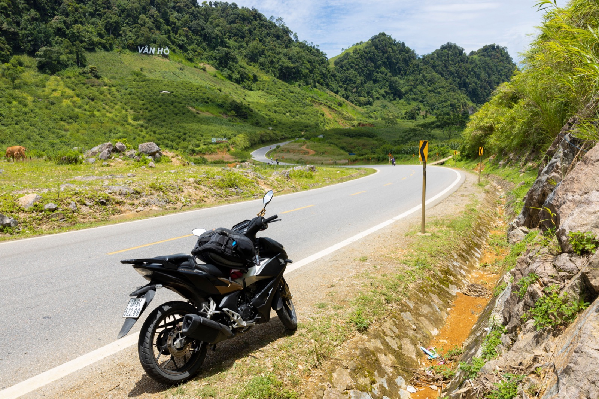
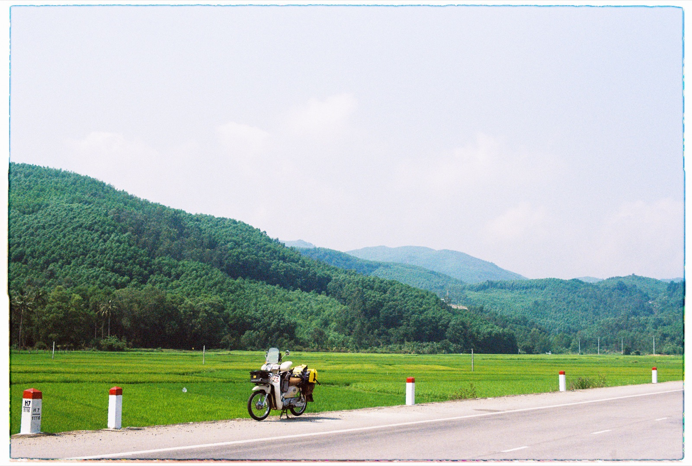

Давление и прокол шины байка: что делать во Вьетнаме

Низкое давление делает байк тяжёлым в управлении, увеличивает нагрев шины и расход топлива. Перекачанное колесо хуже поглощает неровности. Универсальной цифры для всех моделей нет: ориентир нужно брать из руководства или наклейки конкретного байка.
Как часто проверять
Проверяй холодные шины хотя бы раз в одну-две недели, перед дальней поездкой и после сильного удара в яму. Манометр на заправке или в мастерской точнее проверки ногой.
Признаки медленного прокола
- байк начинает хуже держать прямую;
- руль становится тяжёлым или «плавает»;
- шина заметно проседает после ночной стоянки;
- приходится регулярно подкачивать одно колесо;
- виден гвоздь, порез или повреждение вентиля.

Если колесо спустило в движении
Не тормози резко и не делай резкий поворот. Плавно отпусти газ, удерживай руль прямо, включи сигнал поворота и сместись к безопасному краю. С пассажиром сначала остановись, затем попроси его слезть.
Можно ли ехать дальше
На полностью спущенной шине продолжать движение опасно: можно потерять управление, повредить покрышку и обод. Если сервис совсем рядом, байк лучше докатить. Для поиска введи на карте vá xe máy — ремонт прокола мотобайка — или sửa xe máy — мотосервис.
Камера или бескамерная шина
Способ ремонта зависит от конструкции колеса и места повреждения. Жгут может быть временным решением только для подходящего прокола бескамерной шины; боковой порез или серьёзное повреждение требуют оценки мастера и часто замены. Не соглашайся на ремонт, не уточнив, что именно повреждено.
Когда менять покрышку
Трещины, вздутия, видимый корд, сильно стёртый рисунок или повторяющиеся проколы — повод не экономить. После ремонта проверь давление ещё раз на следующий день.
Связь с расходом топлива
Спущенные шины повышают сопротивление качению. Если расход неожиданно вырос, давление — одна из первых простых проверок. Подробнее: как измерить расход 50сс.
Коротко
Проверяй холодные шины регулярно, используй данные своей модели и при проколе останавливайся плавно. Не продолжай поездку на полностью спущенном колесе.